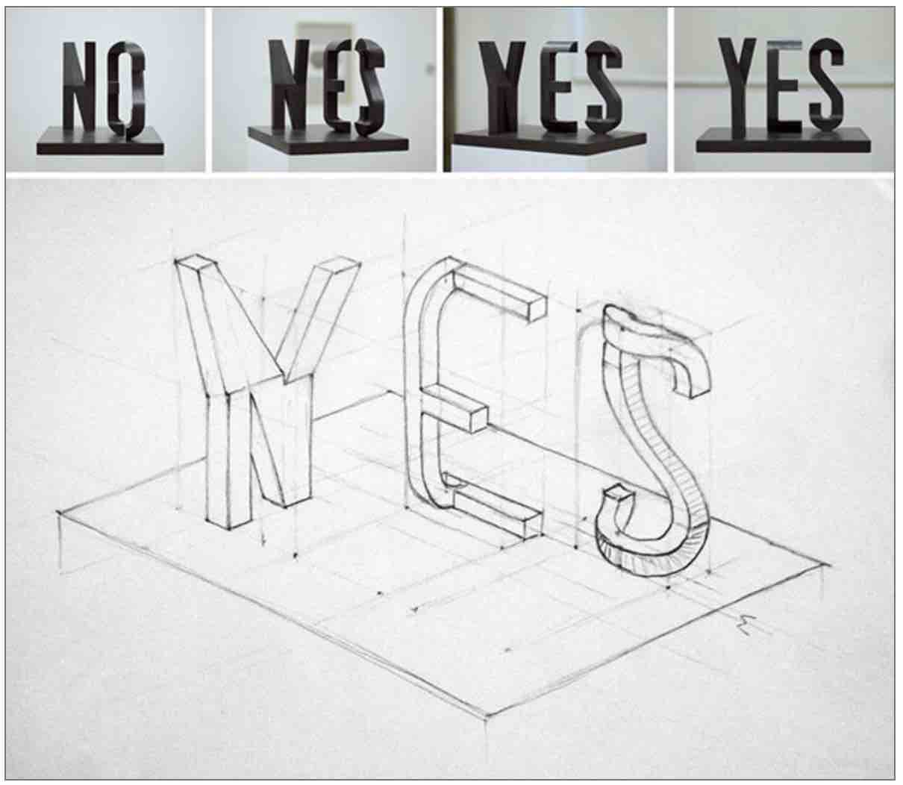

High-dimensional space does not behave like the space you can draw on paper. Three puzzles to convince you. Hochdimensionaler Raum verhält sich nicht wie der Raum, den du auf Papier zeichnen kannst. Drei Rätsel als Beweis.
When Richard Bellman coined the phrase "curse of dimensionality" in 1957, he was describing a specific problem in dynamic programming. The name stuck because it captures something more general: as the number of dimensions grows, the geometry of space changes in ways that break nearly every intuition you have built from living in three dimensions.
Als Richard Bellman 1957 den Begriff „Fluch der Dimensionalität“ prägte, beschrieb er ein bestimmtes Problem der dynamischen Programmierung. Der Name blieb, weil er etwas Allgemeineres trifft. Mit wachsender Dimensionszahl verändert sich die Geometrie des Raums. Sie bricht dabei fast jede Intuition, die du aus dem Leben in drei Dimensionen mitbringst.
This is not a metaphor. The mathematics is exact. The effects are counterintuitive in a specific, measurable, reproducible way. The three puzzles below are not trick questions, they have correct numerical answers. Try to guess before you look.
Das ist keine Metapher. Die Mathematik ist exakt. Die Effekte sind auf eine genau messbare und wiederholbare Weise kontraintuitiv. Die drei Rätsel unten sind keine Fangfragen. Sie haben korrekte numerische Antworten. Rate zuerst, bevor du nachsiehst.
Take a d-dimensional cube with side length 2. Place a d-dimensional sphere of radius 1 inside it, touching all faces. In 2D this is a circle inside a square, taking up 78% of the area. In 3D a ball inside a cube takes up 52%. What happens as d grows?
Nimm einen d-dimensionalen Würfel mit Seitenlänge 2. Leg eine d-dimensionale Kugel mit Radius 1 hinein, die alle Seiten berührt. In 2D ist das ein Kreis in einem Quadrat, und er nimmt 78 % der Fläche ein. In 3D nimmt eine Kugel im Würfel 52 % ein. Was passiert, wenn d wächst?
Take a sphere of radius 1 in d dimensions. Now consider a thin shell just inside the surface, the region between radius 0.995 and radius 1 (thickness 0.5% of the radius). What fraction of the sphere's volume is inside this shell?
Nimm eine Kugel mit Radius 1 in d Dimensionen. Betrachte nun eine dünne Schale direkt unter der Oberfläche. Gemeint ist der Bereich zwischen Radius 0,995 und Radius 1. Die Schale ist also 0,5 % des Radius dick. Welcher Bruchteil des Kugelvolumens liegt in dieser Schale?
Pick two points at random on the surface of a d-dimensional unit sphere. Draw vectors from the origin to each point. What is the probability that the angle between these two vectors is between 89° and 91°, within one degree of a right angle?
Wähle zwei zufällige Punkte auf der Oberfläche einer d-dimensionalen Einheitskugel. Zieh vom Ursprung einen Vektor zu jedem Punkt. Mit welcher Wahrscheinlichkeit liegt der Winkel zwischen diesen Vektoren zwischen 89° und 91°? Das ist höchstens ein Grad vom rechten Winkel entfernt.
In 3D, two random vectors are almost never near-perpendicular. Angles are spread across the full range. The probability of landing exactly between 89° and 91° is tiny, roughly 1.75%.
In 3D sind zwei zufällige Vektoren fast nie nahezu senkrecht. Die Winkel verteilen sich über den gesamten Bereich. Genau zwischen 89° und 91° zu landen ist sehr unwahrscheinlich, nämlich ungefähr 1,75 %.
Probably not much. That is the point. N-dimensional geometry is not intuitive, no matter how good a mental picture you start from, the numbers come out wrong. The intuition you built in 2D and 3D actively misleads you in high dimensions. This is not a failure of imagination. It is a mathematical fact.
Wahrscheinlich nicht viel. Genau das ist der Punkt. Geometrie in n Dimensionen ist nicht intuitiv. Egal, von welchem mentalen Bild du ausgehst, die Zahlen kommen anders heraus. Die Intuition aus 2D und 3D führt dich in hohen Dimensionen aktiv in die Irre. Das ist kein Versagen der Vorstellungskraft. Es ist eine mathematische Tatsache.
Two strategies exist. The first is to reduce the dimensions before applying any model. The second is to use algorithms that are specifically designed to work well in high dimensions, where the neighbourhood concept is replaced by something more robust.
Es gibt zwei Strategien. Die erste reduziert die Dimensionen, bevor überhaupt ein Modell darauf läuft. Die zweite nutzt Algorithmen, die eigens für hohe Dimensionen gebaut sind. Dort ersetzt etwas Robusteres den Begriff der Nachbarschaft.

The algorithms above make it sound straightforward: feed in 1000 dimensions, get out 2. But what you get out depends entirely on what those 2 dimensions are capturing, and there is no guarantee they capture what matters for your problem. Dimensionality reduction is itself a modelling decision, with its own assumptions, its own failure modes, and its own version of the bias-variance trade-off.
Die Algorithmen oben klingen unkompliziert: 1000 Dimensionen rein, 2 raus. Was herauskommt, hängt aber ganz davon ab, was diese 2 Dimensionen erfassen. Eine Garantie, dass sie das Wichtige für dein Problem erfassen, gibt es nicht. Die Dimensionsreduktion ist selbst eine Modellierungsentscheidung. Sie hat eigene Annahmen, eigene Fehlerquellen und eine eigene Version des Kompromisses zwischen Verzerrung und Varianz.
The sculpture above says "NO" from one angle and "YES" from another. Both views are truthful projections of the same object. Neither is the full story. Every dimensionality reduction technique makes a bet about which angle to look from, which directions of variation in the data are worth keeping and which are noise. PCA bets on linear variance. t-SNE bets on local proximity. An autoencoder bets on whatever the reconstruction loss rewards. These are not neutral choices.
Die Skulptur oben zeigt aus einem Blickwinkel „NEIN“ und aus einem anderen „JA“. Beide Ansichten sind ehrliche Projektionen desselben Objekts. Keine von beiden ist die ganze Geschichte. Jede Technik zur Dimensionsreduktion wettet darauf, aus welchem Winkel du schaust. Sie entscheidet, welche Variationsrichtungen in den Daten es wert sind, behalten zu werden, und welche nur Rauschen sind. PCA setzt auf lineare Varianz. t-SNE setzt auf lokale Nähe. Ein Autoencoder setzt auf das, was der Rekonstruktionsverlust belohnt. Neutral ist keine dieser Entscheidungen.
In practice this means: always verify that the reduced representation preserves what actually matters for your downstream task. A beautiful 2D visualisation that groups points in visually appealing clusters may be hiding the variation your classifier needs. The curse of dimensionality does not disappear when you reduce dimensions, you have simply traded one set of problems for another.
In der Praxis heißt das: Prüf immer, ob die reduzierte Darstellung das bewahrt, worauf es bei deiner Aufgabe ankommt. Eine hübsche 2D-Visualisierung mit schön gruppierten Clustern kann genau die Variation verbergen, die dein Klassifikator braucht. Der Fluch der Dimensionalität verschwindet nicht, wenn du Dimensionen reduzierst. Du hast dann nur einen Satz Probleme gegen einen anderen getauscht.
KNN depends on the idea that nearby points have similar outputs. In high dimensions, all points become approximately equidistant, so "nearest neighbour" loses its meaning. The chart below shows how much of the data range you must cover just to find K neighbours, as dimensions increase.
KNN beruht auf der Idee, dass nahe Punkte ähnliche Ausgaben haben. In hohen Dimensionen sind alle Punkte ungefähr gleich weit voneinander entfernt. Damit verliert „nächster Nachbar“ seine Bedeutung. Das Diagramm unten zeigt, wie viel des Datenbereichs du abdecken musst, um K Nachbarn zu finden, wenn die Dimensionen wachsen.